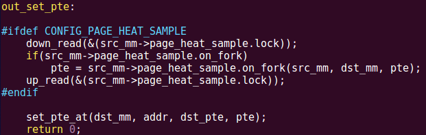
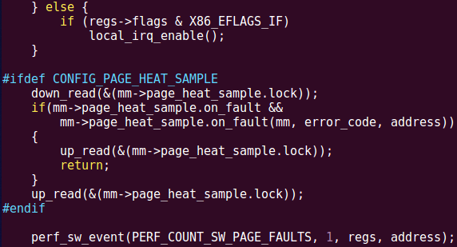
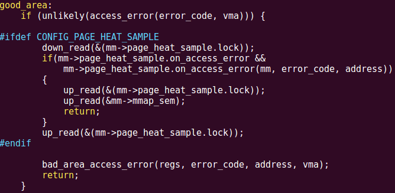
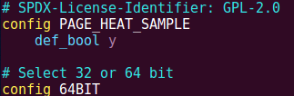
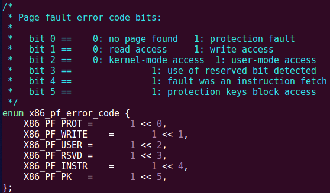

Kernel的修改非常简单，分为7步，下面一步步分解。我使用的kernel版本是4.17.19，不过修改对kernel版本依赖很小。
第一步，在include/linux/mm_types.h的第506行附近，即struct mm_struct结构体最后加入如下代码，一切修改都以新的数据结构为基础：
#ifdef CONFIG_PAGE_HEAT_SAMPLE
struct
{
struct rw_semaphore lock;
int (*on_fault)(struct mm_struct* mm, unsigned long error_code, unsigned long address);
int (*on_access_error)(struct mm_struct* mm, unsigned long error_code,
unsigned long address);
pte_t (*on_fork)(struct mm_struct* mm, struct mm_struct* dst_mm, pte_t pte);
void (*on_exit)(struct mm_struct* mm);
void* privdata;
}
page_heat_sample;
#endif

每一个字段的用处将在以下代码中体现。
第二步，在kernel/fork.c的第632行附近，即__mmdrop()里面，加入如下代码，使得进程结束时我们自定义的on_exit函数可以被调用，以做一些析构操作：
#ifdef CONFIG_PAGE_HEAT_SAMPLE
down_read(&(mm->page_heat_sample.lock));
if(mm->page_heat_sample.on_exit)
mm->page_heat_sample.on_exit(mm);
up_read(&(mm->page_heat_sample.lock));
#endif

第三步，在kernel/fork.c的第929行附近，即mm_init()开头，加入如下代码，实现新增字段的初始化工作：
#ifdef CONFIG_PAGE_HEAT_SAMPLE
init_rwsem(&(mm->page_heat_sample.lock));
mm->page_heat_sample.on_fault = NULL;
mm->page_heat_sample.on_access_error = NULL;
mm->page_heat_sample.on_fork = NULL;
mm->page_heat_sample.on_exit = NULL;
mm->page_heat_sample.privdata = NULL;
#endif

第四步，在mm/memory.c的第1059行附近添加如下代码，使得内核模块有机会修改fork()时的页表项（比如，复制给子进程的PTE是不能有“地雷”的，所以on_fork()需要清除PTE上的地雷）：
#ifdef CONFIG_PAGE_HEAT_SAMPLE
down_read(&(src_mm->page_heat_sample.lock));
if(src_mm->page_heat_sample.on_fork)
pte = src_mm->page_heat_sample.on_fork(src_mm, dst_mm, pte);
up_read(&(src_mm->page_heat_sample.lock));
#endif

第五步，在arch/x86/mm/fault.c的1305行附近，即__do_page_fault()中，插入如下代码，使得发生page fault时我们的on_fault函数得到调用（比如“排雷”）（目前仅支持x86，如要支持其他硬件，在相应的arch/xxx/mm/fault.c中作类似修改）：
#ifdef CONFIG_PAGE_HEAT_SAMPLE
down_read(&(mm->page_heat_sample.lock));
if(mm->page_heat_sample.on_fault &&
mm->page_heat_sample.on_fault(mm, error_code, address))
{
up_read(&(mm->page_heat_sample.lock));
return;
}
up_read(&(mm->page_heat_sample.lock));
#endif

该函数返回0表示该page fault与页热度检测无关，交由kernel原本的page fault逻辑去处理。返回1表示该page fault是“地雷”导致的，并且已经“排雷”，不需要后续的kernel的逻辑了，直接return。
第六步，在arch/x86/mm/fault.c的第1391行附近，加入以下代码，使得TLB偶尔不一致或者并发“踩雷”时，权限异常导致的page fault能够有豁免机会（见附录详解）：
#ifdef CONFIG_PAGE_HEAT_SAMPLE
down_read(&(mm->page_heat_sample.lock));
if(mm->page_heat_sample.on_access_error &&
mm->page_heat_sample.on_access_error(mm, error_code, address))
{
up_read(&(mm->page_heat_sample.lock));
up_read(&mm->mmap_sem);
return;
}
up_read(&(mm->page_heat_sample.lock));
#endif

第七步，在arch/x86/Kconfig的最前面，加上如下代码，让以上所有CONFIG_PAGE_HEAT_SAMPLE使能：
config PAGE_HEAT_SAMPLE
def_bool y

OK，编译内核：
make oldconfig make -j4 sudo make modules_install sudo make install
重启即可使用新的Kernel了！
========================附录：on_acces_error的作用=================
首先介绍一下背景知识：当MMU发现一个页异常时，会触发硬件中断，即page fault，并且给定一个error_code，指明发生page fault的原因。在x86上，error_code的第一位指明是缺页还是页权限错误，第二位指明是读访问还是写访问，第三位指明是用户态访问还是内核态访问等等，定义可见arch/x86/include/asm/traps.h末尾：

可见，error_code只会指出是不是权限异常导致的，却不会指出到底是什么权限的缺失导致的。
我们考虑一个多线程的情况。假设一个进程拥有两个线程A和B，且某一时刻A和B分别运行在core 1和core 2上。若A和B同时访问同一个页，恰巧该页上有“地雷”，那么core 1和core 2同时触发page fault。假设core 1先执行了on_fault()，清除了“地雷”，并且直接退出了page fault，回到用户态继续执行。当core 2执行on_fault()时，发现该页不存在“地雷”，因此认为该page fault与“地雷”无关，就返回0，执行kernel原本的page fault逻辑。由于“地雷”是通过权限异常触发的（x86上使用_PAGE_USER位），因此kernel原本的access_error()函数检查error_code发现，该page fault是一个错误的访问权限导致的，于是发送SIGSEGV信号杀死进程。
除了多线程并发踩同一个雷会导致该bug，某些不保证TLB一致性的CPU也会导致该bug。假设某个页上有“地雷”，运行在core 1上的线程A先“踩雷”，触发了page fault，在on_fault()内部“排雷”，并直接return回用户态继续运行。尽管页表中的该PTE已经没有了“地雷”，且core 1的TLB也刷新了，但是core 2的TLB中该页的PTE副本依旧有“地雷”。于是，当稍后运行在core 2上的线程B访问该页时，TLB中的“地雷”使得core 2触发page fault。可是，当core 2调用on_fault()后发现，该页并不存在“地雷”，因此认为该page fault与“地雷”无关，于是on_fault()返回0，执行kernel中原本的page fault逻辑。接着又是一样的桥段——由于“地雷”是通过权限异常触发的（x86上使用_PAGE_USER位），因此kernel原本的access_error()函数检查error_code发现，该page fault是一个错误的访问权限导致的，于是发送SIGSEGV信号杀死进程。
那么，新增的on_access_error()函数指针做了什么呢？第六步的代码很显然，如果kernel通过access_error()发现page fault是错误的权限导致的，那么就会调用我们的on_access_error()，如果我们的on_access_error()返回0，那么才发送信号杀死进程，否则return（我称之为“豁免”，就好像发了一块“免死令牌”）。我现在的策略是，如果连续256次权限异常都发生在同一个地址上，那么才返回0（允许杀死进程），否则都返回1（豁免）。
这样设计为何可以解决这个bug呢？分四种情况讨论：
- 对于绝大多数的“踩雷”，在第五步的代码中就正常的“排雷”并且返回用户态继续执行了。
- 对于上述第一种情况，core 2的权限异常被“豁免”一次，也return回用户态继续执行了。要连续并发地踩到同一个雷，概率是指数级减小，两个线程要连续256次地同时踩同一个有雷的页，是决不可能的事情（尽管概率上依旧可能发生，但是工程上完全可以忽略）。
- 对于上述第二种情况，core 2的权限异常被“豁免”一次后，core 2的TLB会自动加载该页对应的PTE，因此不会再次因为不一致的TLB而陷入page fault。
- 如果应用程序本身有bug，试图访问不该访问的内存（比如写一个只读的地址），那么触发page fault，on_access_error()给与第一次豁免后，一返回用户态，应用程序又尝试重新执行该访问，于是又在同一个地址触发page fault。只要on_access_error()不停地给与豁免，应用程序就会不停地在同一个地址触发page fault。当次数超过256次后，on_access_error()不再给与豁免，允许kernel发送SIGSEGV杀死进程。
因此，对于绝大多数情况，性能开销只是踩雷和排雷的开销。对于上述两种情况，也就是多了一次page fault，但因为偶尔发生，性能损耗忽略不计。而对于程序有bug的情况，尽管本来一次page fault就能杀死进程，而现在需要256次page fault才能杀死进程，但是对于安全性而言，结果都是一样的，应用程序都没有任何作恶的机会。而对于一个即将被杀死的进程、或者说一个有bug的程序，讨论性能有何意义呢？
最后解释一个问题，为何是256次？对于上述第一种情况，该数字可能只要8或16或者稍微更大些即可，一个小概率P再弄个好几次方，小到可以忽略即可。而对于第二种情况，这个数字只要超过core的数目即可，因为最极端的情况就是每一个core都发生一次page fault然后自动加载最新的PTE。